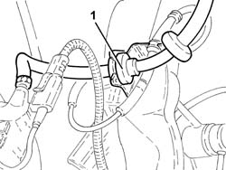
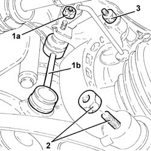
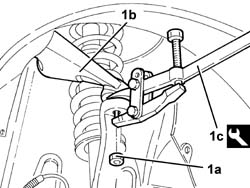
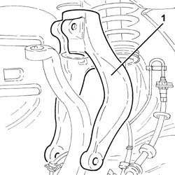
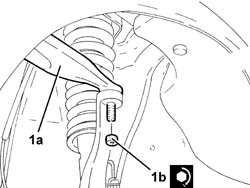
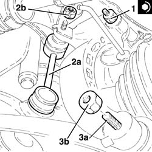
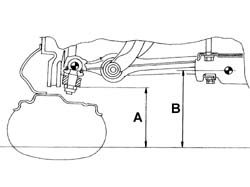
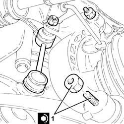

4410A80 DAMPER LOWER FORK - R R
- Path
- Procedures > 44 SUSPENSION AND WHEELS > 4410 FRONT SUSPENSION > 4410A FRONT DAMPERS AND SPRINGS > 4410A80 DAMPER LOWER FORK - R R
- Kind
- repair procedure (removal / refitting; the operation number is the code)
- Applies to
- all engines; all production periods
- Interactive page
- https://sloeber94.github.io/elrnDB-aGt/en/#/125001433
Applies to: all engines; all production periods
 Removing
Removing
 Refitting
RefittingPosition the vehicle on the ramp
Proceed with removal
Op. 4450B10 TYRE INFLATION VALVE CAP - REPLACE
1. Release the front brake caliper flexible pipe from the mounting bracket.

Applies to: all engines; all production periods
1. Undo the nuts (1a) and disconnect the front anti-roll bar joint (1b) from the fork.
2. Undo the bolt securing the front suspension lower damper connection fork to the lower wishbone, damper side.
3. Undo the bolt securing the front suspension lower damper connection fork to the lower wishbone, lower wishbone side.

Applies to: all engines; all production periods
1. Undo the nut (1a) and disconnect the front upper wishbone (1b) from the knuckle using the tool (1c).
 | Name | Country |
|---|---|---|
1c | Extractor | 1.821.169.000 |

Applies to: all engines; all production periods
1. Remove the lower fork connecting the front suspension damper to the lower wishbone.

Applies to: all engines; all production periods
Refitting
RemovingRefit the lower fork connecting the front suspension damper to the lower wishbone.
1. Connect the front upper wisbhone (1a) to the knuckle and secure by tightening the nut (1b) to the recommended torque.
 | Fastening | Component | Ø | Value (daNm) |
|---|---|---|---|---|
1b | Nut | FRONT SUSPENSION TOP LEVER | M10 | (Steering knuckle side) 4.3 ÷ 4.7 |

Applies to: all engines; all production periods
1. Tighten the bolt securing the lower fork connecting the front suspension damper to the lower wishbone, damper side, to the specified torque.
| Fastening | Component | Ø | Value (daNm) |
|---|---|---|---|---|
1 | Bolt | FRONT DAMPER FORK ON WISHBONE | M12 | (Shock absorber side) 7.2 ÷ 8.8 |
2. Connect the front anti-roll bar joint (2a) to the fork and tighten the nut (2b) to the specified torque.
| Fastening | Component | Ø | Value (daNm) |
|---|---|---|---|---|
2b | Nut | FRONT ANTI-ROLL BAR JOINTS | M10 | (Front shock absorber fork side) 4.1 ÷ 5.0 |
3. Fit the bolt (3a) and screw in the nut (3b) without tightening it.

Applies to: all engines; all production periods
1. Position the suspension in such a way that the difference between the distance B-A is 48 mm.

Applies to: all engines; all production periods
1. Tighten the bolt securing the lower fork connecting the front suspension damper to the lower wishbone, lower wishbone side, to the specified torque.
| Fastening | Component | Ø | Value (daNm) |
|---|---|---|---|---|
1 | Bolt | FRONT DAMPER FORK ON WISHBONE | M12 | (Lower track control arm side) 10.8 ÷ 13.2 |

Applies to: all engines; all production periods
Fit the front brake caliper flexible pipe to the mounting bracket.
Proceed with refitting
Op. 4450B10 TYRE INFLATION VALVE CAP - REPLACE.
Remove the car from the ramps.
Proceed with refitting
Topics linked from this page (2)
- 4450A10 FRONT WHEEL GEOMETRY - CHECK USING OPTICAL EQUIPMENT - INCLUDES FRONT WHEEL TOW-IN ADJUSTMENT IF NECESSARY
- 4450B10 TYRE INFLATION VALVE CAP - REPLACE
Topics that link to this page (13)
- 1084B34 CARTRIDGE ENGINE OIL FILTER SUPPORT - R + R
- 2110D53 LEFT HAND FLANGE ON DIFFERENTIAL - R+R
- 2110D56 RIGHT HAND FLANGE ON DIFFERENTIAL - R+R
- 2110D63 RH DIFFERENTIAL SHAFT OIL SEAL - R R
- 2110D74 DIFFERENTIAL L/H INNER DRIVE SHAFT - R + R
- 2710A10 DRIVE SHAFT WITH JOINTS (ONE), L/H OR R/H - R + R
- 2710A31 INTERMEDIATE DRIVE SHAFT - R R
- 2710A35 INTERMEDIATE DRIVE SHAFT MOUNT - R R
- 4410A10 L/H OR R/H FRONT SUSPENSION SPRING/DAMPER UNIT (ONE) - R+R - CHECK WHEEL GEOMETRY SEPARATELY IF NECESSARY
- 4410A12 FRONT SUSPENSION DAMPER (ONE), LH OR RH - FOR MCPHERSON STRUT SYSTEM - INCLUDES DISMANTLING/RE-BUILDING OF ASSEMBLY AT BENCH R R
- 4410A84 DAMPER LOWER FORK - R R
- 4410B68 LOWER SWINGING ARM(ONE), LH OR RH OF FRONT SUSPENSION - R R -CHECK WHEEL ALIGNMENT SEPARATELY
- 5530A10 ALTERNATOR - R+R